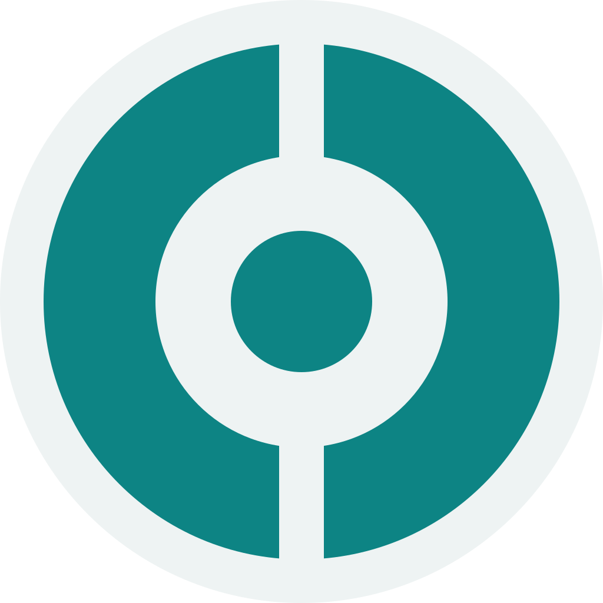

cyoda-go Helm chart repository
Lightweight, multi-node Go digital twin of the Cyoda platform.
Helm repo for Cyoda-platform/cyoda-go. Open source, single Go binary, Postgres-backed.
Install
helm repo add cyoda https://cyoda-platform.github.io/cyoda-go
helm repo update
helm search repo cyoda --versions
helm install cyoda cyoda/cyoda --version 0.6.3The Helm repo manifest is served at index.yaml.